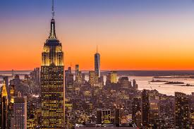

✈❤DREAM DESTINATIONS❤✈
"✈✈Travel isn’t always about distance—it’s about discovery.✈✈"


Paris, the capital and largest city of France, is renowned worldwide as a vibrant center of culture, history, art, fashion, and intellectual life. Known as the "City of Light" (La Ville Lumière), Paris earned this nickname during the Enlightenment for its leading role in education, philosophy, and the early adoption of street lighting, symbolizing its status as a beacon of knowledge and modernity. Situated along the Seine River in north-central France, Paris covers an area of about 105 square kilometers (41 square miles) and has a population of approximately 2.15 million within the city proper, with the metropolitan area housing over 10 million people, making it the most densely populated city in the European Union.The city's geography is marked by the Seine River, which divides Paris into the Left Bank (Rive Gauche) and Right Bank (Rive Droite).
The Hot Air Balloon Festival in Turkey, held annually in the enchanting region of Cappadocia, is one of the world’s most spectacular and eagerly anticipated events, drawing thousands of visitors from across the globe. The festival typically takes place in early to mid-August, with the 2025 edition scheduled from August 3rd to 11th, offering a vibrant week filled with breathtaking aerial displays, cultural festivities, and unforgettable experiences.Cappadocia’s unique landscape, characterized by its fairy chimneys, ancient cave dwellings, and surreal rock formations, provides an extraordinary backdrop for the festival. The festival is centered around the town of Göreme, located in the heart of Cappadocia, where visitors can witness hundreds of balloons soaring gracefully over the valleys and rock formations.

Switzerland, officially the Swiss Confederation, is a small, landlocked country in west-central Europe bordered by Italy, France, Germany, Austria, and Liechtenstein. Covering about 41,295 square kilometers, it is renowned for its stunning natural landscapes dominated by the Alps, Jura mountains, and numerous glacial lakes. The Swiss Alps feature iconic peaks such as the Matterhorn and Dufourspitze, attracting tourists and outdoor enthusiasts worldwide. Switzerland’s population of around 9.1 million is culturally diverse, with four official languages: German, French, Italian, and Romansh, reflecting its rich multicultural heritage.
New York City, the most populous city in the U.S. with about 8.48 million residents, is a global center for culture, finance, and commerce. Comprising five boroughs—Manhattan, Brooklyn, Queens, The Bronx, and Staten Island—it is known for iconic landmarks like Times Square, Central Park, the Statue of Liberty, and Wall Street. NYC’s diverse population speaks over 800 languages, reflecting its rich immigrant heritage. The city’s vibrant arts scene includes Broadway theaters and world-class museums. Recent developments include the High Line expansion and congestion pricing to reduce traffic and improve air quality.

Singapore is a vibrant island city-state in Southeast Asia, renowned for its transformation from a developing nation in 1965 to a global economic powerhouse. Singapore’s strategic location has made it a leading hub for finance, trade, and aviation, attracting multinational companies and investors. The economy is diversified, driven by manufacturing, technology, and services, and supported by excellent infrastructure, healthcare, and education systems.Despite challenges like global economic uncertainties and resource constraints, Singapore continues to adapt by embracing digitalization and sustainability. Its forward-looking policies and multicultural harmony make it a model of economic success, social cohesion, and environmental stewardship in the modern world.